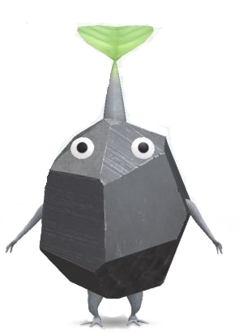

皮克敏高階工具站
🧮 戰力模擬器
🍄 雲端回報系統
🧮 單隻皮克敏戰力精算器
依照社群最新攻略圖精算：全部欄位數據相加即為官方最終真實戰力值！
1. 選擇皮克敏種類 (基礎戰力)：
紅 (4)
藍 (3)
黃 (3)
紫 (6)
白 (2)

岩 (5)
羽 (2)
冰 (2)
2. 友好度 (愛心層級)：
🖤 0 心 (+0)
❤️ 1 顆紅心 (+1)
❤️ 2 顆紅心 (+2)
❤️ 3 顆紅心 (+3)
❤️ 4 顆紅心 (+4)
💛 1 顆金心 (+5)
💛 2 顆金心 (+6)
💛 3 顆金心 (+7)
💛 4 顆金心 (+8)
3. 頭部花朵狀態：
🦲 禿頭頭 (+0)
🌱 葉子頭 (+1)
🟢 花苞頭 (+2)
🌼 普花頭 (+3)
🌹 特殊花 / 當月副花 (+4)
🌻 當月主花 (+5)
4. 皮克敏飾品狀態：
❌ 無飾品 (工作力 +0)
🎀 已獲得一般飾品 (工作力 +4)
🌟 當季副活動/復刻飾品 (非活動菇常駐+4 / 活動菇大匹配+100)
🔥 當季主活動限定飾品 (非活動菇常駐+4 / 活動菇大匹配+300)
5. 擬攻打的蘑菇環境：
🏡 閒置狀態 (無蘑菇加成)
🔴 紅色蘑菇 (+12 同色匹配)
🔵 藍色蘑菇 (+12 同色匹配)
🟡 黃色蘑菇 (+12 同色匹配)
🟣 紫色蘑菇 (+12 同色匹配)
⚪ 白色蘑菇 (+12 同色匹配)
⚫ 灰色蘑菇 (+12 同色匹配)
💗 粉紅色蘑菇 (+12 同色匹配)
🧊 冰藍蘑菇 (+12 同色匹配)
🔥 元素火蘑菇 (限紅皮參戰 +100)
💧 元素水蘑菇 (限藍皮參戰 +100)
☠️ 元素毒蘑菇 (限白皮參戰 +100)
⚡ 元素電子蘑菇 (限黃皮參戰 +100)
💎 特特殊水晶蘑菇 (限岩皮參戰 +100)
🍄 本月神秘/限定活動蘑菇
💡 單隻預估破壞力
0
將所有同打法的皮克敏加總
即為你的小隊總攻擊力！